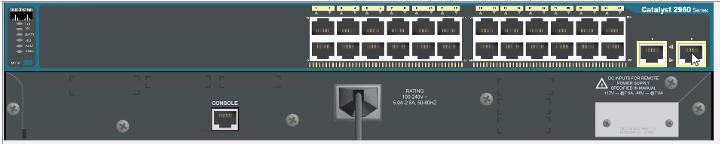

Vlan es un concepto logico, no es una interfaz fisica porque no sale nunca como un puerto.

La interfas logica esa se usa apra el agrupamiento de puertos.
Operaciones con Vlan:

onfiguracion de VLAN 1

Show vlan

Se aparecen todos los puertos diponibles para la vlan.
Creacion de una VLAN: La creas y le pones nombre

La vlan no tiene puertos


Ahora la maquina Fa0/10
otra Vlan


VTY para habilitar comuncacion telnet